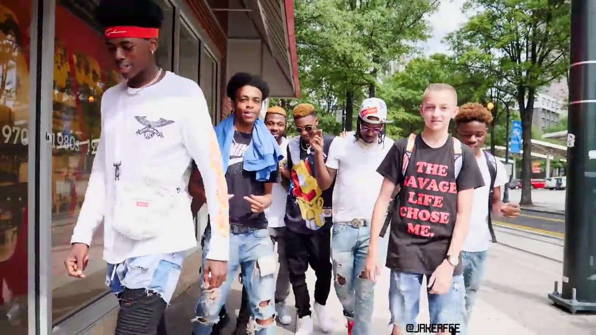

COSMID KID
Carrera musicaly demas
Y
Tambien conocido como PEDRITO VM
¿Quien es el?
y como fuerom sus inicios en esta gran industria llamada internet JE JE JE
Creador de contenido y personalidad de YouTube que se ha hecho conocido por publicar videos de comedia, desafíos y vlogs en su canal PedritoVM. Ha logrado conseguir más de 4.4 millones de suscriptores en la plataforma. Tiene un canal secundario de YouTube llamado PedritoVM plus. ANTES DE LA FAMA Una de sus publicaciones más antiguas fue un video titulado "[Pong Ping]," publicado en el 2012. CURIOSIDADES Su nombre de usuario es una combinación de su nombre y la ciudad natal de su padre, Villa María. Fue patrocinado profesionalmente por Dxracer Argentina. En el 2018 lanzó su propia línea de ropa llamada Kuda Rose. Fue nominado en la categoría Influence + Fresca en los premios MTV MIAW 2019. VIDA FAMILIAR Su nombre completo es Pedro Antonio Parnenzini. Tiene un hermano menor llamado Juan Francisco.

COSMID KID
Su paso en la industria de la musica, area en la cual destaca
Pedro Antonio Parnenzini (Villa María, Córdoba, Argentina, 17 de enero de 1997) es un Youtuber y trapero argentino de 22 años considerado un influencer por tener dos canales de YouTube: PedritoVM y PedritoVM plus, y hace poco, crear su canal COSMIC KID, con el cuál se dedicaría a la música. Pedro es autor de Flamingo Star, Sentido, Digan lo que digan, Mi cruzada, Boffe Te Amo, Cumple tus sueños, Cornelio Saavedra, God’s Plan, también, le hicieron un maravilloso rap llamado PedritoVM Rap, pero como COSMIC KID, hizo Abrazáme y Déjame ser. Empezó en el mundo musical por su primera canción Mi cruzada, la hizo como PedritoVM, y Abrázame la hizo como COSMIC KID, la cuál ya supera las 839.476 vistas, y tiene más de 180.024 likes.


EL DEMENTE
uno de los grandes apoyos que tuvo este artista en su carrera
Comentarios de sus mas allegados
-
boffe
que gran trabajo hermano sigue asi -
EL DEMENTE
cada cancion es mejor que la anterior -
 Lit Killah
Lit Killah
nos vemos en la sima -
pedrito (cosmid kid)
gracias por la pagina!
Tags
canciones boffe lo nuevo artistas demente marca albumnes novia kuda rose colaboraciones casa estilo Mas canal
Inspiration


Follow Me
Subscribe
Enter your e-mail below and get notified on the latest blog posts.